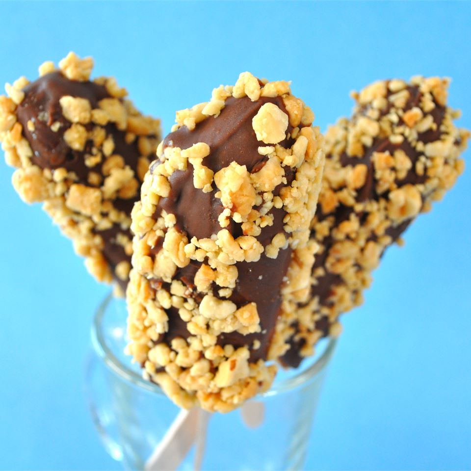

Monkey Tails

monkey-tails
Description
These are a good summer treat for trying to chill from the heat.
Ingredients
- 10 ice pop sticks
- 5 very ripe bananas, peeled, and halved crosswise
- 1 (16 ounce) package semisweet chocolate chips
- 1 tbs butter
- 10 tbs flaked coconut, or as need
Steps
- Insert 1 pop stick into the cut end of each banana. Place the bananas on a wax paper covered baking sheet and freeze until the bananas are frozen, about 2 hours.
- Melt the chocolate and butter in a microwave-safe glass or ceramic bowl in 30-second intervals, stirring after each melting, for 1-3 minutes (depending on your microwave).
- Dip the frozen bananas in the melted chocolate, spooning the chocolate over the banana to cover it completely. Roll in coconut if desired. Place the dipped bananas on the wax paper-covered baking sheet, and freeze until the chocolate is firm.